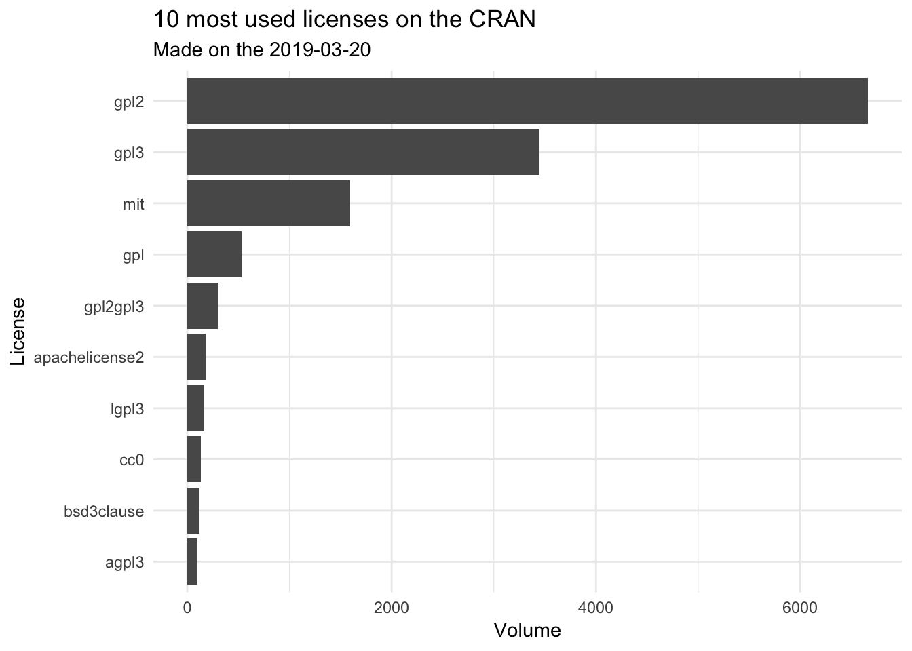
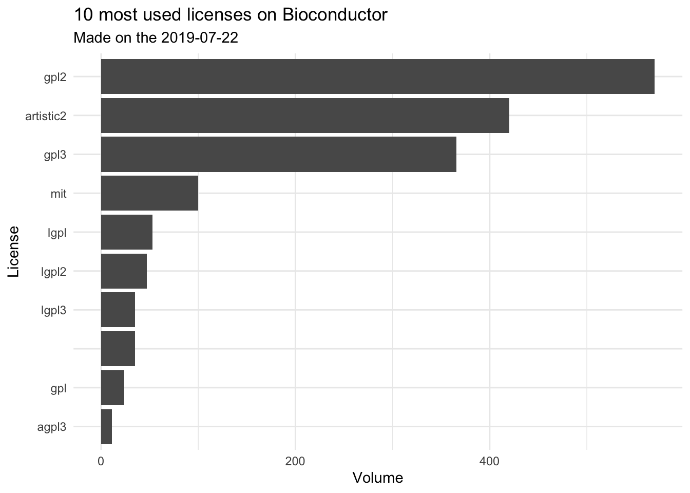

Chapter 2 Introduction
2.1 Diving into the CRAN & BioConductor database
library(tidyverse)- Getting all the packages
# Done on
Sys.time()## [1] "2019-03-20 11:05:05 CET"# Getting the DB
cran_db <- tools::CRAN_package_db() %>% thinkr::clean_names()
bioc_db <- read.dcf(url("https://bioconductor.org/packages/release/bioc/src/contrib/PACKAGES")) %>% as.data.frame() %>% thinkr::clean_names()cran_small <- cran_db %>%
select(package, contains("license")) %>%
mutate(src = "cran")
bioc_small <- bioc_db %>%
select(package, contains("license")) %>%
mutate(src = "bioc")
db <- rbind(cran_small, bioc_small)How many different licenses?
db %>%
distinct(license) %>%
count()## # A tibble: 1 x 1
## n
## <int>
## 1 173Counting the number of package with a licence file:
db$has_file_licence <- str_detect(db$license, "file")
# How many have a li
db %>%
count(has_file_licence)## # A tibble: 3 x 2
## has_file_licence n
## <lgl> <int>
## 1 FALSE 13107
## 2 TRUE 2461
## 3 NA 2Counting the license_is_foss:
# Not that much information
db %>%
count(license_is_foss)## # A tibble: 3 x 2
## license_is_foss n
## <chr> <int>
## 1 <NA> 15558
## 2 no 1
## 3 yes 11db %>%
filter(license_is_foss == "no")## package license license_is_foss
## 1 MotifDb Artistic-2.0 | file LICENSE no
## license_restricts_use src has_file_licence
## 1 yes bioc TRUEHow many package have a license with restrictive use?
db %>%
count(license_restricts_use)## # A tibble: 3 x 2
## license_restricts_use n
## <chr> <int>
## 1 <NA> 15543
## 2 no 10
## 3 yes 17db %>%
filter(license_restricts_use == "yes") %>%
select(package, license)## package license
## 1 akima ACM | file LICENSE
## 2 alphahull file LICENSE
## 3 asypow ACM | file LICENSE
## 4 gpclib file LICENSE
## 5 momr Artistic-2.0
## 6 PredictiveRegression file LICENSE
## 7 regtest file LICENSE
## 8 rngwell19937 file LICENSE
## 9 sfdct CC BY-NC-SA 4.0
## 10 sigQC file LICENSE
## 11 tripack ACM | file LICENSE
## 12 CNEr GPL-2 | file LICENSE
## 13 genArise file LICENSE
## 14 GraphAlignment file LICENSE
## 15 MotifDb Artistic-2.0 | file LICENSE
## 16 RankProd file LICENSE
## 17 SPIA file LICENSEdb %>%
filter(license_restricts_use == "yes") %>%
count(license, sort = TRUE)## # A tibble: 6 x 2
## license n
## <chr> <int>
## 1 file LICENSE 10
## 2 ACM | file LICENSE 3
## 3 Artistic-2.0 1
## 4 Artistic-2.0 | file LICENSE 1
## 5 CC BY-NC-SA 4.0 1
## 6 GPL-2 | file LICENSE 1Cleaning the license name because to get a more global idea
cleaner <- compose(
# Removing the file licence elements
~ gsub("filelicense", "", .x),
~ gsub("filelicence", "", .x),
# Removing empty spaces
~ gsub(" ", "", .x),
# Removing all non-alpha numeric character
proustr::pr_keep_only_alnum,
# Removing the .0 at the end of numbers
~ gsub("\\.0", "", .x),
tolower
)
db <- db %>%
mutate(clean_license = cleaner(license))
db %>%
count(clean_license, sort = TRUE)## # A tibble: 97 x 2
## clean_license n
## <chr> <int>
## 1 gpl2 7221
## 2 gpl3 3771
## 3 mit 1681
## 4 gpl 551
## 5 artistic2 490
## 6 gpl2gpl3 299
## 7 lgpl3 198
## 8 apachelicense2 190
## 9 cc0 134
## 10 bsd3clause 126
## # … with 87 more rowsHow many GPL related licenses?
# How many GPL based licenses ?
n_gpl <- str_detect(db$clean_license, "gpl") %>%
sum(na.rm = TRUE)
n_gpl## [1] 12486(n_gpl / nrow(db)) * 100## [1] 80.19268How may licenses are used just once?
db %>%
count(clean_license) %>%
filter(n == 1)## # A tibble: 32 x 2
## clean_license n
## <chr> <int>
## 1 apachelicenseversion2 1
## 2 artistic2gpl2 1
## 3 ccbysa2 1
## 4 cecill2gpl2 1
## 5 cpl 1
## 6 cpl1 1
## 7 eupl11 1
## 8 eupl12 1
## 9 freebsdgpl2 1
## 10 gpl1 1
## # … with 22 more rowsWhat are the 10 most frequent licenses?
db %>%
count(clean_license, sort = TRUE) %>%
top_n(10)## Selecting by n## # A tibble: 10 x 2
## clean_license n
## <chr> <int>
## 1 gpl2 7221
## 2 gpl3 3771
## 3 mit 1681
## 4 gpl 551
## 5 artistic2 490
## 6 gpl2gpl3 299
## 7 lgpl3 198
## 8 apachelicense2 190
## 9 cc0 134
## 10 bsd3clause 126db %>%
count(clean_license, sort = TRUE) %>%
top_n(10) %>%
ggplot(aes(reorder(clean_license, n), n )) +
geom_col() +
coord_flip() +
labs(
title = "10 most used licenses on the CRAN / Bioconductor",
subtitle = glue::glue("Made on the {Sys.Date()}"),
x = "License",
y = "Volume"
) +
theme_minimal()## Selecting by n
db %>%
filter(src == "cran") %>%
count(clean_license, sort = TRUE) %>%
top_n(10) %>%
ggplot(aes(reorder(clean_license, n), n )) +
geom_col() +
coord_flip() +
labs(
title = "10 most used licenses on the CRAN",
subtitle = glue::glue("Made on the {Sys.Date()}"),
x = "License",
y = "Volume"
) +
theme_minimal()## Selecting by n
db %>%
filter(src == "bioc") %>%
count(clean_license, sort = TRUE) %>%
top_n(10) %>%
ggplot(aes(reorder(clean_license, n), n )) +
geom_col() +
coord_flip() +
labs(
title = "10 most used licenses on Bioconductor",
subtitle = glue::glue("Made on the {Sys.Date()}"),
x = "License",
y = "Volume"
) +
theme_minimal()## Selecting by n